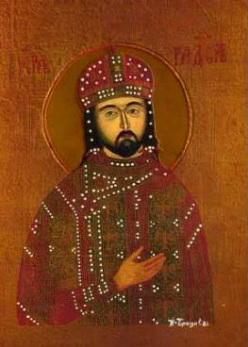
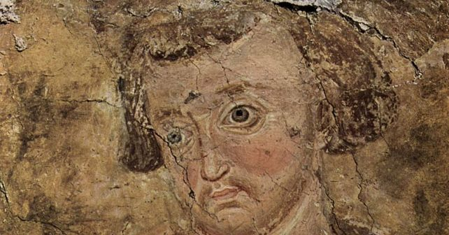
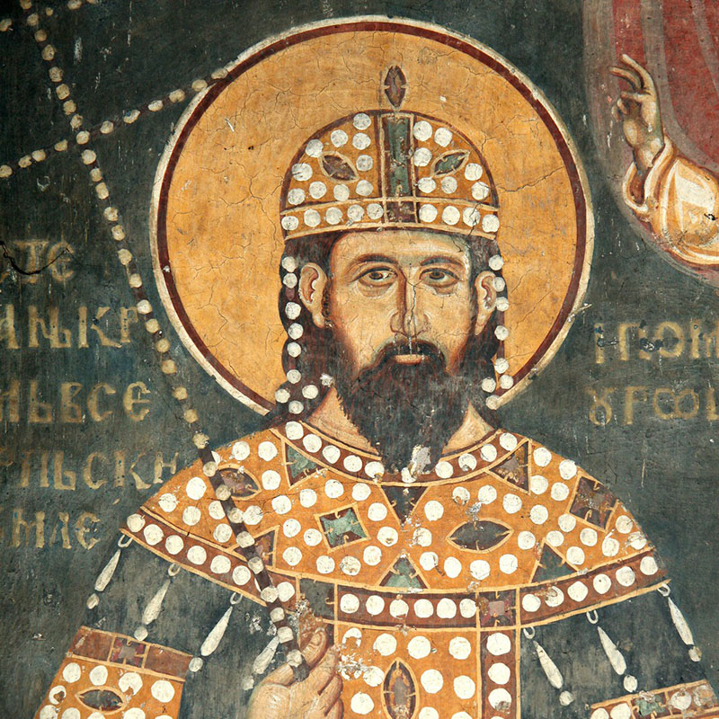
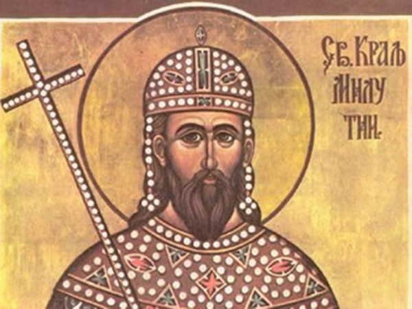
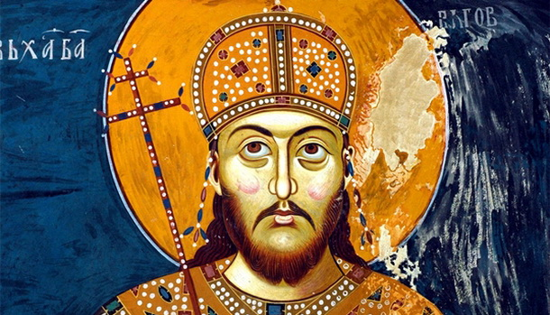
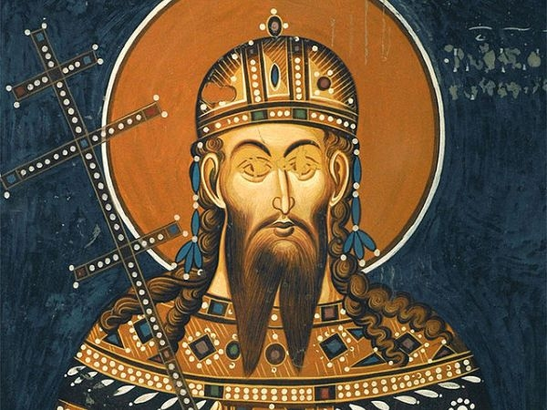

Стефан Немања рођен је око 1113 године у Рибници (данашња Подгорица), као четврти и најмлађи син властелина Завиде. Током периода владавине, од 1168 до 1196. године, Стефан Немања је заједно са краљевином Угарском и Светим римским царством ратовао против Византије и Млетачке републике и тиме проширио своју територију на Зету и Неретву. Стефан Немања се сматра једним од родоначелника Српске православне цркве и једним од највећих бораца против богумилских јеретичких учења. Био је ктитор великог броја манастира и цркава, од којих су најзначајнији Студеница, Хиландар и Ђурђеви Ступови. На великом државном сабору 25.марта 1196. године предаје власт свом средњем сину Стефану Немањићу, а заједно са својом супругом Аном се замонашује у манастиру Студеници, где добијају монашка имена Симеон и Анастасија. Заједно са сином Савом одлази на Свету гору 1198.године да обнове манастир Хиландар где и умире 13. фебруара 1199. године.
Стефан Првовенчани
Стефан Првовенчани био је српски средњовековни владар (1196–1227) и први крунисани краљ међу Немањићима, због тога је добио свој општеприхваћени надимак Првовенчани. Првовенчани је био други син великог жупана Стефана Немање I, родоначелника династије Немањића, и Ане. Био је млађи брат Вукана Немањића, а старији је брат Растка Немањића, оснивача аутономне Српске архиепископије. Постао је велики жупан и владар Србије када је наследио престо на државном сабору код Петрове цркве у Расу вероватно 25. марта 1196. године. Првовенчани је и један од првих значајних писаца оригиналних житија владара-светитеља у српској књижевности, а његов стил постао је узор за друге писце. Његово најзначајније дело је „Житије Светог Симеона“ у којем је описао живот и чуда свога оца.
Стефан Радослав

Стефан Радослав Немањић био је краљ Срба (1227/1228 — 1233/1234). Он је најстарији син Стефана Првовенчаног и Евдокије, ћерке византијског цара Алексија III. Наследио је оца 1227. године а његова владавина се окончала између краја септембра 1233. и почетка 1234. Радослав се оженио Теодоровом ћерком. Радослав је Ани поклонио веренички прстен. Свадба се требала одржати у Прилепу или у Скопљу. Радослав је са Аном био у истом степену крвног сродства као и са Теодором. Међутим, брак је сада био потребан и његовом тасту Теодору, како би уредио односе са Србијом и добио одрешене руке за рат на истоку. Краљ Радослав је више пута наглашавао своју повезаност са византијском царском династијом. По мајци, Радослав је био потомак династије Анђела, која је владала Царством у годинама пре пада Цариграда. Радослављев таст Теодор употребљавао је равноправно сва три царска презимена (Анђео, Комнин, Дука).
Стефан Владислав

Стефан Владислав Немањић био је српски краљ (1233/1234. — 1241/1242) и ктитор манастира Милешева, у ком је сахрањен Свети Сава. Владислав је био син Стефана Првовенчаног, српског великог жупана и краља (1196-1228) и Евдокије, ћерке византијског цара Алексија III. Још као краљевић, Владислав је приступио изградњи манастира Милешева. Теодосије сведочи да је храм грађен током владавине краља Владислава. Пресудну улогу у подизању и осликавању Милешеве имао је Владислављев стриц Сава. Ипак, манастир је несумњиво подигнут у име краља Владислава. Манастир Милешева посвећена је Вазнесењу Христовом. Подигнута је у жупи Црна Стена. Милешева је у целости завршена тек 1234. године, односно године када је Владислав дошао на власт.
Стефан Урош I
Стефан Урош I Немањић, познатији као Урош Велики, био је српски краљ од 1241/1242. до 1276. године. Стефан Урош I је син Стефана Првовенчаног и Ане Дандоло, унуке млетачког дужда Енрика Дандола. Сматра се за једног од најважнијих српских владара 13. века. Урош I је први српски владар који је усвојио пун орнат византијских царева. На фрескама и печатима носи царски сакос и стему византијских царева (са средишњим луком, орфаносом и перпендулијама), као и ореол који сведочи о боголикости суверена. У време краља Уроша I постављени су темељи експанзије српске средњовековне државе која ће средином XIV века постати царство. Принц Урош је рођен највероватније око 1223. године.
Стефан Драгутин

Стефан Драгутин Немањић био је краљ Србије од 1276. до 1282. године и краљ Срема од 1284. до 1316. године. Син је Стефана Уроша I и Јелене Анжујске од рода фрушког. Имао је два сина, Владислава и Урошица (касније монах Стефан) и ћерке Јелисавету и Урсулу. Још на рођењу је одређен да свога оца наследи на престолу те му је због тога и пружано васпитање какво је одговарало његовом положају. Урош I оженио је сина Драгутина угарском принцезом Каталином, ћерком Стефана V најраније 1268. године. Драгутин је владао Србијом од 1276. до 1282. године. На почетку владавине је успоставио добре односе са Дубровачком републиком обновивши њене трговачке повластице. Издао јој је „повељу о трговини“ која је веома значајна због тога што се у њој први пут спомињу властеличићи. Драгутин је наставио Урошеву политику ступајући у савез са Карлом Анжујским против Византије.
Стефан Милутин

Стефан Урош II Милутин Немањић био је краљ Србије (1282—1321) и један од најмоћнијих српских владара у средњем веку. Припадао је династији Немањић. Милутин је рођен највероватније око 1253. године, као други син српског краља Стефана Уроша I и његове супруге краљице Јелене Анжујске. Милутин је имао старијег брата краља Стефана Драгутина, млађег брата Стефана (умро у детињству) и једну сестру. Током његове скоро четрдесетогодишње владавине, Краљевина Србија је отпочела своје значајно ширење ка југу на рачун Византије са којом је 1299. године успостављена нова граница на линији Охрид—Прилеп—Штип. Поред тога, водио је успешне ратове против Бугара, од којих је трајно освојио Браничево са Кучевом, и Татарима.
Стефан Урош III
Стефан Урош III Немањић, познатији као Стефан Дечански, био је краљ Србије из породице Немањића, син краља Милутина (1282—1321) и отац Стефана Душана (краљ 1331—1346, цар 1346—1355). Оженио се бугарском принцезом Теодором са којом је имао синове Душана и Душицу и ћерку Јелену. У другом браку, са византијском принцезом Маријом Палеолог, краљ Стефан Дечански имао је бар двоје деце: цара Симеон Синишу и Теодору. Био је талац Татара од 1292. до око 1297. године. Када се вратио, оженио се Теодором. Урош III добио је управу над Зетом око 1308. године и побунио се против оца краља Милутина крајем 1313. године, или почетком 1314. године, али био је побеђен, ослепљен и послат у Цариград. Подигао је манастир Високи Дечани према коме је назван Дечански.
Стефан Душан

Стефан Урош IV Душан Немањић, познатији као Душан Силни, био је претпоследњи српски краљ из династије Немањића. Имао је титулу краља од 1331. до 1346. године, а затим је постао и први крунисани цар српске државе, када га је на Васкрс 16. априла 1346. године крунисао први српски патријарх Јоаникије II. Душан је владао над новонасталим Српским царством више од 9 година до своје смрти 20. децембра 1355. године. Цар Душан је описан као енергичан владар, јаког карактера и темперамента, зато се често у изворима и литератури јавља и под именом „Душан Силни”.
Стефан Урош V

Стефан Урош V, познатији као Урош Нејаки, био је српски цар (1355–1371) и последњи владар из династије Немањића. Као син и наследник цара Стефана Душана, постао је очев савладар (1346) са титулом краља. За време Урошеве владавине, Српско царство је знатно ослабило услед династичких сукоба и јачања обласних господара. Његова задужбина је манастир Матејча. После смрти цара Уроша V, српска држава Немањића престала је да постоји.
.jpg)
.jpg)

.jpg)